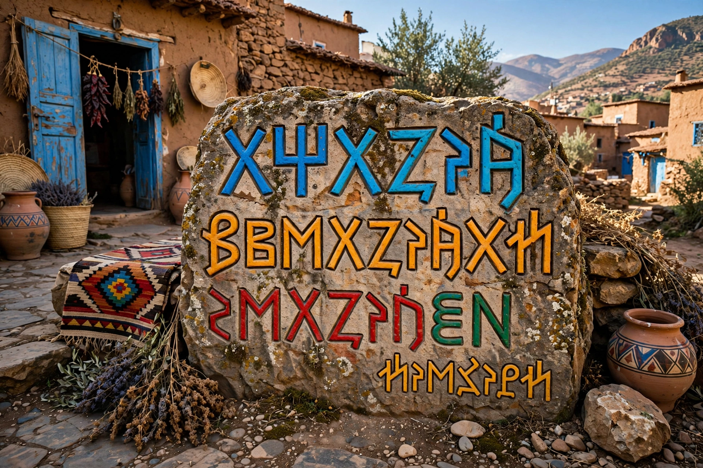

| Berber languages (Tamazight) | |
| Native to | North Africa: Morocco, Algeria, Libya, Tunisia, Mali, Niger, Mauritania, Egypt (Siwa) |
|---|---|
| Speakers | Estimated 14–30+ million (estimates vary widely) |
| Family | Afroasiatic → Berber |
| Major varieties | Kabyle, Tashelhit (Shilha), Central Atlas Tamazight, Tarifit (Riffian), Tuareg (Tamasheq), Shawiya, Zenaga |
| Scripts | Tifinagh (Neo-Tifinagh official in Morocco), Latin, Arabic |
| Official status | Morocco (since 2011), Algeria (since 2016) |

The Berber languages, also called Tamazight (in its various forms), are a branch of the Afroasiatic language family spoken by the Berber (Amazigh) peoples, the indigenous inhabitants of North Africa. They are spoken in a belt of territories from the Siwa Oasis in western Egypt across Libya, Tunisia, Algeria, and Morocco to the Atlantic, and southward into the Sahara and Sahel (Mali, Niger, Burkina Faso, Mauritania) by the Tuareg. The name "Berber" derives ultimately from Greek barbaros; speakers generally prefer Amazigh (plural Imazighen, "free people").
Berber is often described as a single language with strongly divergent dialects, or as a family of closely related languages; mutual intelligibility varies by distance. The largest varieties are Tashelhit in southwest Morocco (millions of speakers), Kabyle in northern Algeria, Central Atlas Tamazight in Morocco's Middle Atlas, Tarifit in Morocco's Rif, Shawiya in Algeria's Aurès, and the Tuareg languages of the desert. Zenaga in Mauritania is highly divergent and endangered. All descend from a common ancestor sometimes identified with ancient Libyc inscriptions of the first millennium BC.
The ancient Libyco-Berber script survives most fully in Tifinagh, still used traditionally by the Tuareg. In 2003 Morocco's Royal Institute of Amazigh Culture (IRCAM) adopted a standardized Neo-Tifinagh alphabet for official use. In Algeria, Kabyle is commonly written in a Latin-based alphabet; Arabic script is also historically used for religious texts. Latin and Tifinagh remain the principal vehicles of a growing modern literature, press, and digital media.
For much of the postcolonial period, Arabization policies marginalised Berber in education and media, prompting an Amazigh cultural movement whose flashpoints included the 1980 "Berber Spring" in Algeria. Morocco recognized Tamazight as an official language in its 2011 constitution, and Algeria followed in 2016. Standardization, teacher training, and urban migration pose continuing challenges; UNESCO classifies several varieties as vulnerable or endangered.
Berber languages typically show verb–subject–object flexibility with rich verbal morphology marking aspect and subject agreement, a construct state for possessed nouns, gender (masculine/feminine), and a set of emphatic consonants — features shared with other Afroasiatic branches such as Semitic and Egyptian, to which Berber is distantly related.